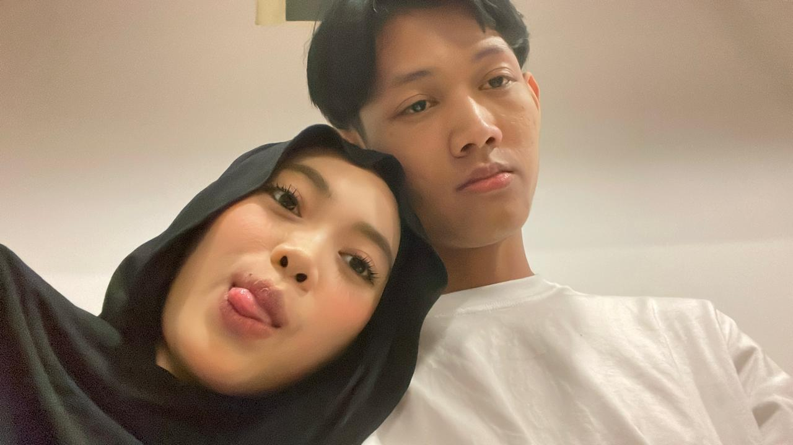
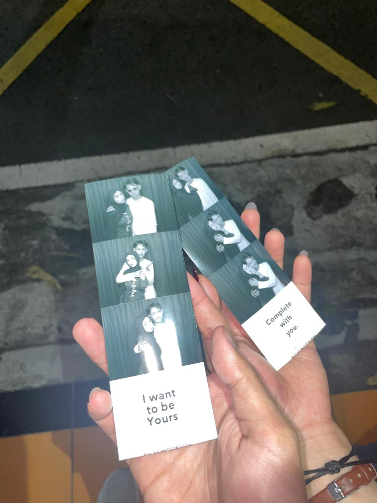
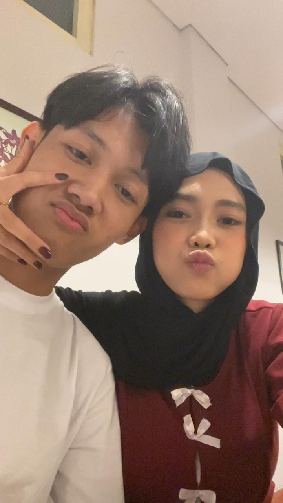

More good days, less overthinking
Semoga tahun ini lebih banyak “OMG I’m so happy” dan lebih sedikit “kenapa aku kepikiran ini jam 2 pagi?” Please. Your brain deserves a vacation too 😭
psst... this page is literally just for u
18 Agustus 2026 · happy birthday to my favorite human, my comfort person, and yes... the girl who somehow owns 87% of my brain rent free.
okay, birthday girl... listen up
Mawar, happy bdayyy 🤍 Semoga hari ini kamu senyum banyak banget. Like, seriously. I hope life treats you extra soft today, karena kamu deserve all the good things, no debate.
Aku mungkin belum bisa muncul di depan pintumu sambil bawa kue dan bilang, “surprise, babe!” So yeah... LDR sucks sometimes. Tapi aku tetap mau bikin sesuatu yang bisa bikin kamu ngerasa sedikit lebih dekat. Anggap aja ini little corner of the internet yang isinya aku, kamu, dan perasaan yang agak kelewat banyak. hehe.
the annoying part: distance
Kadang aku pengen banget bisa bilang “sini” terus kamu beneran datang. No loading, no bad signal, no “kamu tidur ya?” setelah nungguin chat. Just us. Simple.
Tapi walaupun sekarang kita masih dipisahin jarak, satu hal yang lowkey bikin aku tenang: we already proved that distance can be crossed. We met. We held hands. We took silly pictures. And for a while, dunia rasanya nggak sejauh itu.
proof that we actually met hehe
Bukti kalau “kapan ketemu?” pernah berubah jadi “jangan pulang dulu please.” These pics? Tiny pieces of us. And yeah... I kinda love them way too much.





my little birthday wishlist for u
Semoga tahun ini lebih banyak “OMG I’m so happy” dan lebih sedikit “kenapa aku kepikiran ini jam 2 pagi?” Please. Your brain deserves a vacation too 😭
Semoga semua yang lagi kamu kejar pelan-pelan jadi nyata. One step at a time, babe. I’ll be cheering for you, even from miles away.
Jangan berubah cuma karena dunia bilang kamu harus begini begitu. I like you exactly as u are. Cute, random, kadang ngeselin... paket lengkap. hehe.
Semoga ada banyak little wins, kabar baik, makanan enak, tidur nyenyak, uang yang nggak tiba-tiba menghilang, and of course... more moments with me. 😌
Ini harapan yang paling aku suka. Semoga someday kita nggak perlu menghitung hari buat ketemu. Semoga “I miss you” bisa berubah jadi “sini, duduk sebelah aku.” That would be kinda perfect, ngl.
next chapter: hopefully us
Semoga nanti ada lebih banyak “ayo ketemu” daripada “kapan ketemu?”. More random dates, more stupid jokes, more photos that make us cringe later. I want the whole silly package.
Semoga kita punya banyak ordinary days yang ternyata jadi favorite memories. Nggak harus fancy. Maybe cuma makan, jalan, ngobrol ngalor-ngidul, terus ketawa gara-gara hal nggak penting. Sounds perfect to me.
And if life gets messy sometimes,
please remember: I’m still choosing u. Always. 🤍
okay... last one, promise